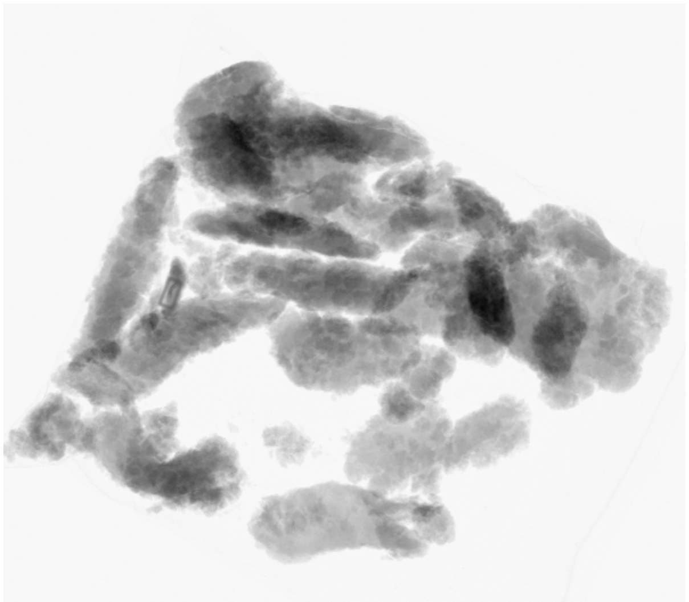

The product creates the background.
Thickness, density, shape, ingredients, natural variation, and product presentation all affect what appears in the x-ray image.
APPLICATION FIT & VALIDATION
Successful inspection depends on the product, package, target condition, line speed, image quality, and production environment. GreyscaleAI reviews those conditions, tests the application with representative product, and builds a validation plan around the performance your team needs.
Your product and package

Inspection image and target signal
WHY FIT MATTERS
X-ray inspection is influenced by the physical differences visible in the image. A target that is distinct in one product or package may be difficult to separate from normal variation in another. The right answer comes from evaluating the real application, not from relying on a generic detection claim.
Thickness, density, shape, ingredients, natural variation, and product presentation all affect what appears in the x-ray image.
Foreign material, bone, missing components, voids, clumps, dents, seal-area product, and other conditions create different image signals.
Package orientation, spacing, throughput, vibration, environment, reject handling, and integration requirements shape the final solution.
THE VALIDATION PATH
GreyscaleAI combines application review, representative testing, system selection, image analysis, and production acceptance into one connected process.
Document the product, package, target condition, current risk or quality issue, line speed, and the decision the inspection result must support.
OUTPUT: APPLICATION BRIEFEvaluate product dimensions, density, normal variation, packaging, presentation, spacing, throughput, washdown needs, and available line space.
OUTPUT: FIT REQUIREMENTSInspect representative good product and known target conditions so the image signal can be compared with normal production variation.
OUTPUT: IMAGE SETMatch aperture, conveyor, detector, line speed, environment, reject handling, and integration requirements to the application.
OUTPUT: SYSTEM RECOMMENDATIONConfigure image analysis for the target condition and test performance against real product variation, known examples, and agreed operating conditions.
OUTPUT: TEST RESULTSConfirm performance on the installed line, document acceptance criteria, establish review workflows in Insights, and transition the application into ongoing support.
OUTPUT: ACCEPTED APPLICATIONWHAT WE REVIEW
Application fit is based on the combined inspection environment. No single specification, sample image, or contaminant size determines performance by itself.


Density, thickness, ingredients, shape, temperature, and natural variation determine the image background against which a target must be found.
Packaging material, folds, clips, seals, overlap, orientation, spacing, and movement can add image features or change consistency.
Material type, size, shape, location, orientation, contrast, and frequency affect how reliably the target can be separated from normal product.
Line speed, product spacing, detector selection, image resolution, exposure, and field of view must work together under production conditions.
Aperture, conveyor, reject mechanism, controls, footprint, washdown requirements, upstream and downstream equipment, and plant standards shape the physical solution.
The team must agree how results will be reviewed, what constitutes acceptable performance, how challenges are documented, and what happens after an event.
VALIDATION EVIDENCE
The result of validation should be more than a successful demonstration. It should give FSQA, operations, engineering, procurement, and leadership a shared understanding of the proposed application.
Images of normal product variation, known target conditions, and relevant production scenarios used during evaluation.
Documented target conditions, operating assumptions, review methods, and agreed measures for production acceptance.
The inspection system, image-capture approach, reject handling, controls, integration, and environmental requirements for the application.
How inspection events, images, alerts, trends, validation records, and follow-up will be handled in GreyscaleAI Insights and ongoing support.
 Inspection image
Event context
Reviewable evidence
Inspection image
Event context
Reviewable evidence
AFTER VALIDATION
Once the application is accepted, the inspection system, AI configuration, Insights workflows, alerts, monitoring, and support become part of the production process. GreyscaleAI retains the image and event context needed to review performance, investigate issues, and support future improvements.
The production team begins with documented products, targets, settings, assumptions, and acceptance criteria.
Inspection events and images create a reviewable operating history instead of leaving teams with only a reject count or alarm code.
Representative production images can support troubleshooting, application review, model updates, and expansion to new products or target conditions.
CONTINUE EXPLORING

Compare standard inspection openings, conveyor configurations, throughput ranges, environments, and typical application fit.

Explore foreign material, product quality, package integrity, weight and count, traceability, and production analytics applications.

Understand how GreyscaleAI uses representative images, product-specific signals, reviewable evidence, and production feedback.
START WITH YOUR APPLICATION
Share representative product information, package format, line speed, target conditions, and the decision your team needs to make. GreyscaleAI will help define the right review and validation path.